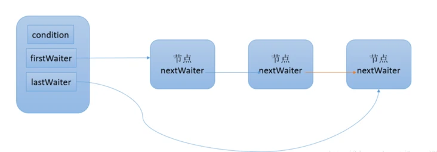
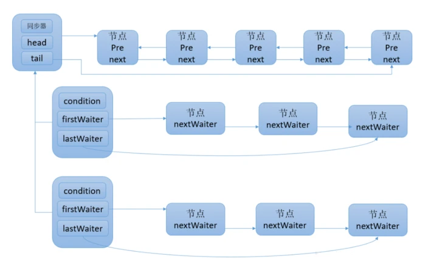
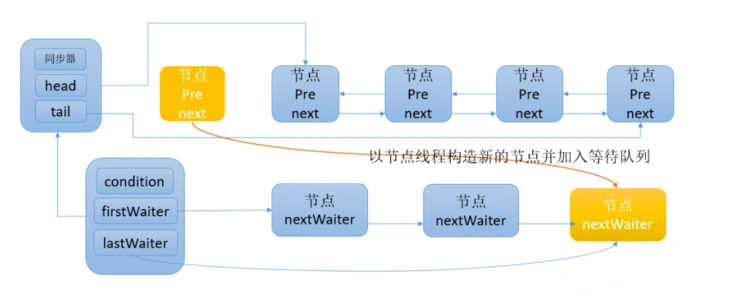
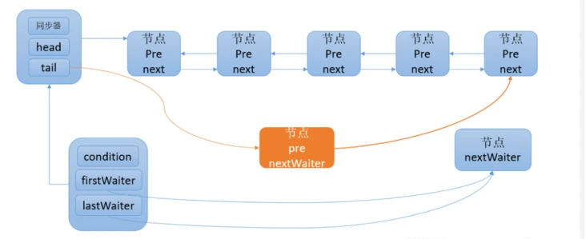

Java并发编程之Condition
本文最后更新于：2022年7月29日 下午
Condition是在java 1.5中才出现的，它用来替代传统的Object的wait()、notify()实现线程间的协作
相比使用Object的wait()、notify()，使用Condition的await()、signal()这种方式实现线程间协作更加安全和高效。
因此通常来说，线程通信的实现比较推荐使用Condition
- Condition是个接口，基本的方法就是await()和signal()方法；
- Condition依赖于Lock接口，生成一个Condition的基本代码是lock.newCondition()
- 调用Condition的await()和signal()方法，都必须在lock保护之内，就是说必须在lock.lock()和lock.unlock之间才可以使用，因为内部会做释放锁的操作，如果不是在lock和unlock之间使用，会报错
java.lang.IllegalMonitorStateException
Conditon中的await()对应Object的wait()；
Condition中的signal()对应Object的notify()；
Condition中的signalAll()对应Object的notifyAll()。
简单demo
1 | |
一般都会将Condition对象作为成员变量。当调用await()方法后，当前线程会释放锁并在此等待，而其他线程调用Condition对象的signal()方法，通知当前线程后，当前线程才从await()方法返回，并且在返回前已经获取了锁。
深入理解demo
获取一个Condition必须通过Lock的newCondition()方法。下面通过一个有界队列的示例来深入了解Condition的使用方式。
有界队列是一种特殊的队列，当队列为空时，队列的获取操作将会阻塞获取线程，直到队列中有新增元素，当队列已满时，队列的插入操作将会阻塞插入线程，直到队列出现“空位”
1 | |
首先需要获得锁，目的是确保数组修改的可见性和排他性。当数组数量等于数组长度时，表示数组已满，则调用notFull.await()，当前线程随之释放锁并进入等待状态。如果数组数量不等于数组长度，表示数组未满，则添加元素到数组中，同时通知等待在notEmpty上的线程，数组中已经有新元素可以获取。在添加和删除方法中使用while循环而非if判断，目的是防止过早或意外的通知，只有条件符合才能够退出循环。
原理
等待队列
等待队列是一个FIFO的队列，在队列中的每个节点都包含了一个线程引用，该线程就是在Condition对象上等待的线程，如果一个线程调用了Condition.await()方法，那么该线程将会释放锁、构造成节点加入等待队列并进入等待状态一个Condition包含一个等待队列，Condition拥有首节点（firstWaiter）和尾节点（lastWaiter）。当前线程调用Condition.await()方法，将会以当前线程构造节点，并将节点从尾部加入等待队列，等待队列的基本结构如下图所示

如图所示，Condition拥有首尾节点的引用，而新增节点只需要将原有的尾节点nextWaiter指向它，并且更新尾节点即可。上述节点引用更新的过程并没有使用CAS保证，原因在于调用await()方法的线程必定是获取了锁的线程，也就是说该过程是由锁来保证线程安全的。在Object的监视器模型上，一个对象拥有一个同步队列和等待队列，而并发包中的Lock（更确切地说是同步器）拥有一个同步队列和多个等待队列，其对应关系如下图所示

await
调用Condition的await()方法（或者以await开头的方法），会使当前线程进入等待队列并释放锁，同时线程状态变为等待状态。当从await()方法返回时，当前线程一定获取了Condition相关联的锁。如果从队列（同步队列和等待队列）的角度看await()方法，当调用await()方法时，相当于同步队列的首节点（获取了锁的节点）移动到Condition的等待队列中
public final void await() throws InterruptedException {
if (Thread.interrupted())
throw new InterruptedException();
// 当前线程加入等待队列
Node node = addConditionWaiter();
// 释放同步状态，也就是释放锁
int savedState = fullyRelease(node);
int interruptMode = 0;
while (!isOnSyncQueue(node)) {
LockSupport.park(this);
if ((interruptMode = checkInterruptWhileWaiting(node)) != 0)
break;
}
if (acquireQueued(node, savedState) && interruptMode != THROW_IE)
interruptMode = REINTERRUPT;
if (node.nextWaiter != null)
unlinkCancelledWaiters();
if (interruptMode != 0)
reportInterruptAfterWait(interruptMode);
}
调用该方法的线程成功获取了锁的线程，也就是同步队列中的首节点，该方法会将当前线程构造成节点并加入等待队列中，然后释放同步状态，唤醒同步队列中的后继节点，然后当前线程会进入等待状态。当等待队列中的节点被唤醒，则唤醒节点的线程开始尝试获取同步状态。如果不是通过其他线程调用Condition.signal()方法唤醒，而是对等待线程进行中断，则会抛出InterruptedException
通知
调用Condition的signal()方法，将会唤醒在等待队列中等待时间最长的节点（首节点），在唤醒节点之前，会将节点移到同步队列中

1 | |
调用该方法的前置条件是当前线程必须获取了锁，可以看到signal()方法进行了isHeldExclusively()检查，也就是当前线程必须是获取了锁的线程。接着获取等待队列的首节点，将其移动到同步队列并使用LockSupport唤醒节点中的线程节点从等待队列移动到同步队列的过程如下图所示

通过调用同步器的enq(Node node)方法，等待队列中的头节点线程安全地移动到同步队列。当节点移动到同步队列后，当前线程再使用LockSupport唤醒该节点的线程。被唤醒后的线程，将从await()方法中的while循环中退出（isOnSyncQueue(Node node)方法返回true，节点已经在同步队列中），进而调用同步器的acquireQueued()方法加入到获取同步状态的竞争中。成功获取同步状态（或者说锁）之后，被唤醒的线程将从先前调用的await()方法返回，此时该线程已经成功地获取了锁。
Condition的signalAll()方法，相当于对等待队列中的每个节点均执行一次signal()方法（注意是这个Condition对应的等待队列），效果就是将等待队列中所有节点全部移动到同步队列中，并唤醒每个节点的线程。